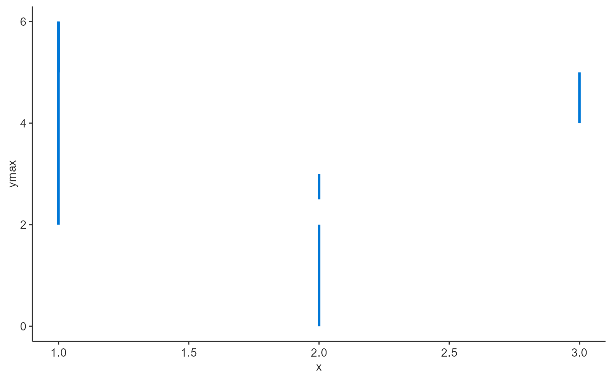
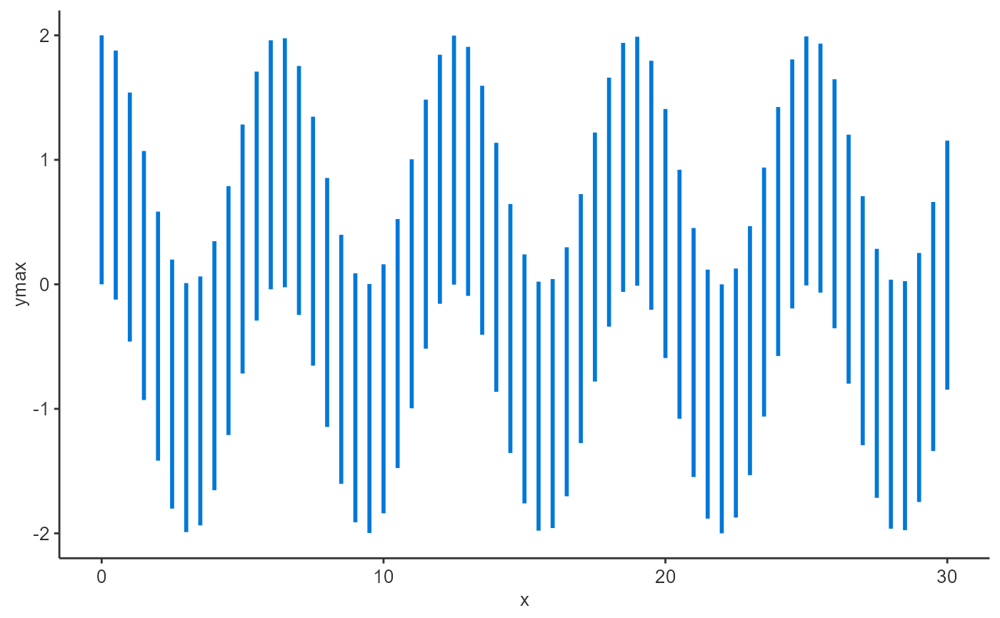
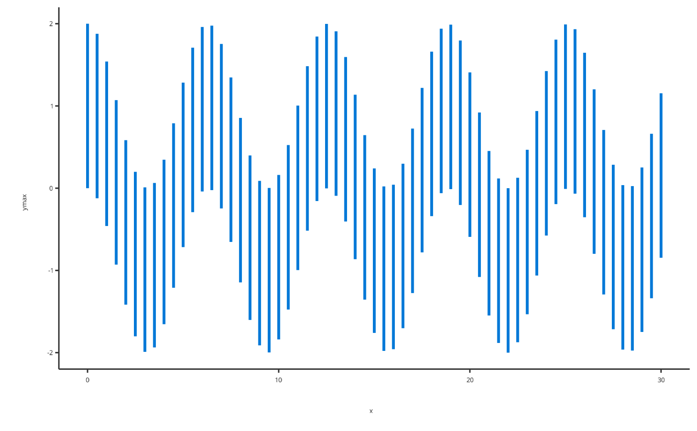
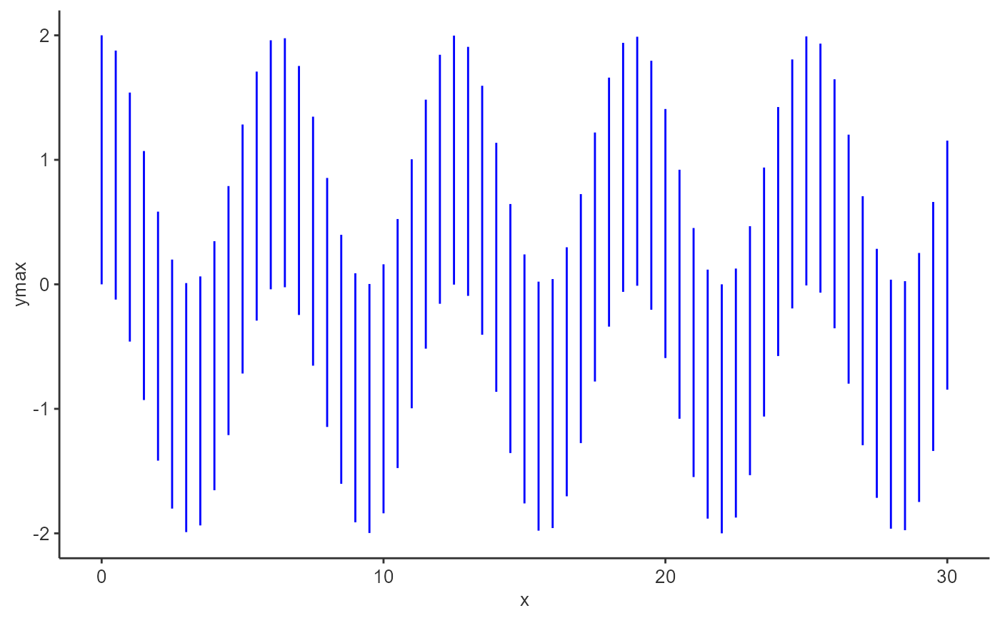
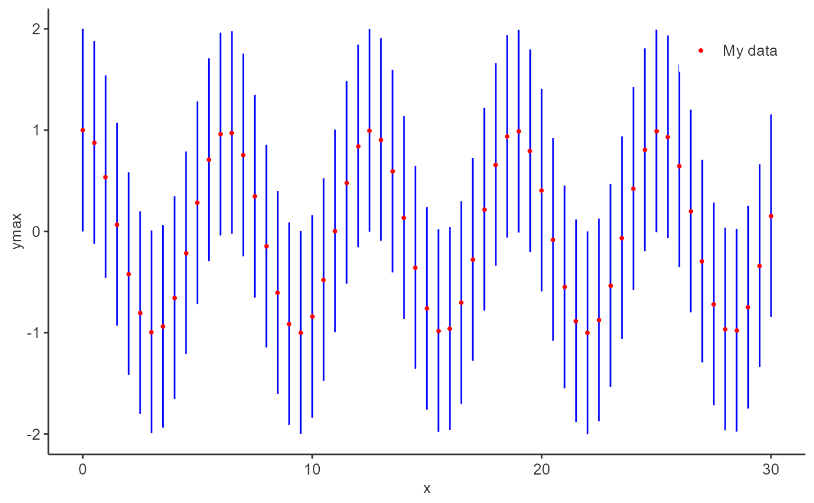
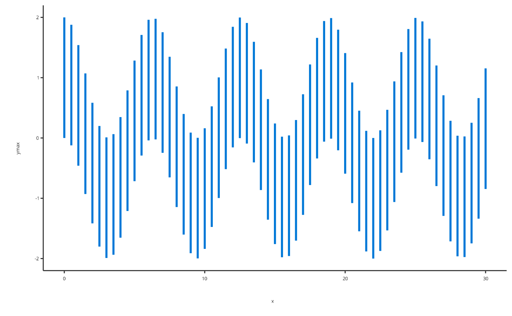
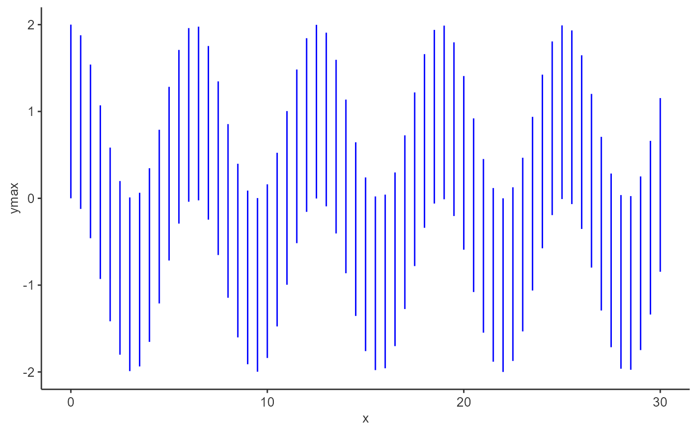
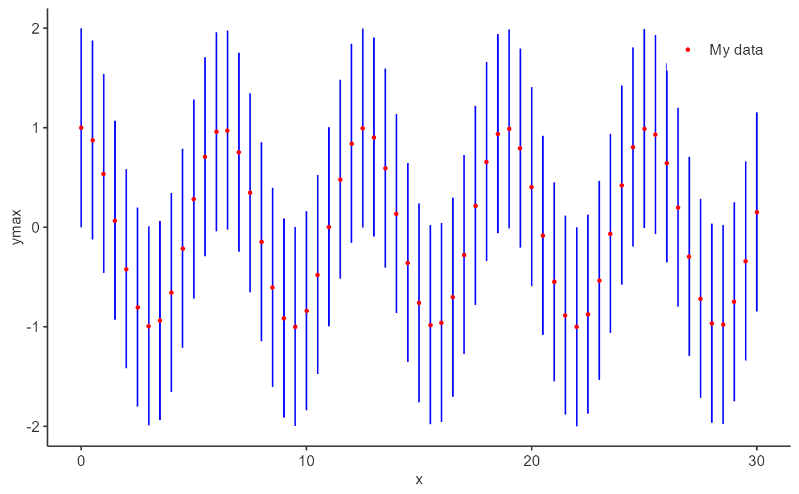

Add an errorbar layer to a ggplot object.
Usage
addErrorbar(
data = NULL,
metaData = NULL,
x = NULL,
ymin = NULL,
ymax = NULL,
caption = NULL,
color = NULL,
size = NULL,
linetype = NULL,
capSize = NULL,
dataMapping = NULL,
plotConfiguration = NULL,
plotObject = NULL
)Arguments
- data
A data.frame to use for plot.
- metaData
A named list of information about
datasuch as thedimensionandunitof its variables.- x
Numeric values to plot along the
xaxis. Only used instead ofdataifdataisNULL.- ymin
Numeric values to plot along the
yaxis. Only used instead ofdataifdataisNULL.- ymax
Numeric values to plot along the
yaxis. Only used instead ofdataifdataisNULL.- caption
Optional character values defining the legend captions of the plot.
- color
Optional character values defining the colors of the plot layer. See
grDevices::colors()to get names of colors- size
Optional numeric values defining the size of the plot layer.
- linetype
Optional character values defining the linetype of the plot layer. See enum
Linetypesto get names of linetype.- capSize
Numeric extent of the error bars caps Caution the value corresponds to the ratio of the mean spacing between plotted error bars. For instance, an
extentof1will fill the caps until the next error bar- dataMapping
A
RangeDataMappingobject mappingx,ymin,ymaxand aesthetic groups to their variable names ofdata.- plotConfiguration
An optional
PlotConfigurationobject defining labels, grid, background and watermark.- plotObject
An optional
ggplotobject on which to add the plot layer
References
For examples, see: https://www.open-systems-pharmacology.org/TLF-Library/articles/atom-plots.html
See also
Other atom plots:
addLine(),
addRibbon(),
addScatter(),
initializePlot()
Examples
# Add errorbar using x, ymin and ymax
addErrorbar(
x = c(1, 2, 1, 2, 3),
ymin = c(5, 0, 2, 3, 4),
ymax = c(6, 2, 6, 2.5, 5)
)

# Add errorbar using a data.frame
time <- seq(0, 30, 0.5)
errorbarData <- data.frame(x = time, ymin = cos(time) - 1, ymax = cos(time) + 1)
addErrorbar(
data = errorbarData,
dataMapping = RangeDataMapping$new(x = "x", ymin = "ymin", ymax = "ymax")
)

# Or for simple cases a smart mapping will get directly x, ymin and ymax from data
addErrorbar(data = errorbarData)
 # Add a errorbar with caption
addErrorbar(data = errorbarData, caption = "My errorbar plot")

# Add a errorbar with specific properties
addErrorbar(data = errorbarData, color = "blue", size = 0.5, caption = "My data")

# Add a errorbar with specific properties
p <- addErrorbar(
data = errorbarData,
color = "blue", size = 0.5, caption = "My data"
)
addScatter(
x = time, y = cos(time),
color = "red", size = 1, caption = "My data",
plotObject = p
)

# Add a errorbar with caption
addErrorbar(data = errorbarData, caption = "My errorbar plot")

# Add a errorbar with specific properties
addErrorbar(data = errorbarData, color = "blue", size = 0.5, caption = "My data")

# Add a errorbar with specific properties
p <- addErrorbar(
data = errorbarData,
color = "blue", size = 0.5, caption = "My data"
)
addScatter(
x = time, y = cos(time),
color = "red", size = 1, caption = "My data",
plotObject = p
)
